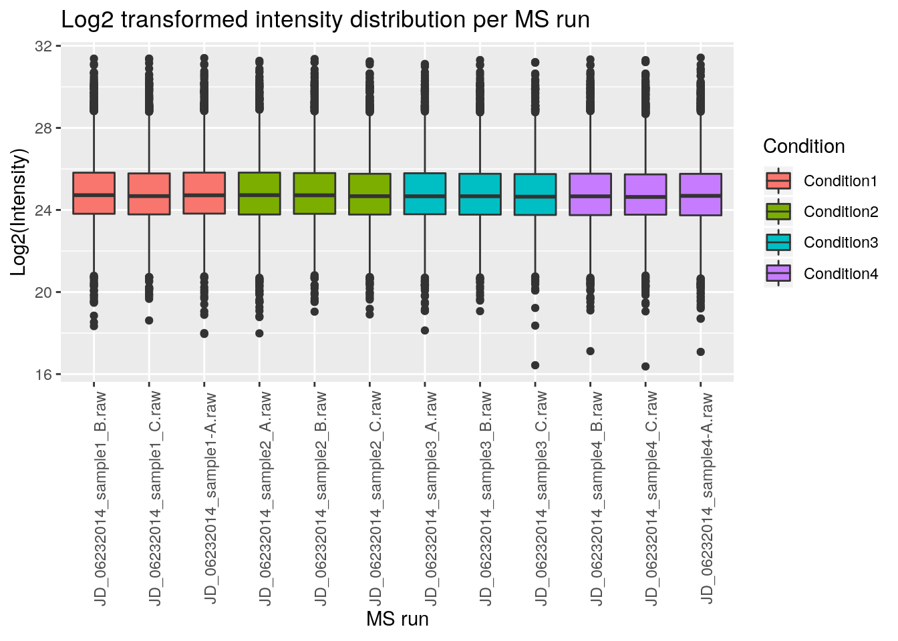

Chapter 2 Data analysis with R
Objectives
- Reading data in R
- Data manipulation and exploration
- Visualisation
The data.frame and ggplot2 sections are based on the R for data analysis and visualization Data Carpentry course.
2.1 Data analysis
2.1.1 Reading in data
The file we’ll be reading in is a dataset that has been 1) processed in Skyline and 2) summarized by each run and protein with MSstats. We will practice with it.
Tip Often you’ll get data delivered as a Microsoft Excel file. You can export any spreadsheet to a .csv (comma separated values) file in Excel through the Save As.. > Format: Comma Separated Values (.csv) menu item.
In Rstudio, go to the environnment pane, click on Import Dataset dropdown and choose From Text File... from the dropdown menu. Import the iPRG_example_runsummary.csv file from your data directory, and inspect that Rstudio correctly parsed the text file into an R data.frame.
Now inspect the Console Environment pane again. Notice that a new variable for the iPRG_example data frame was created in the environment by executing the read.csv function. Let’s have a look at the documentation for this function by pulling up the help pages with the ?.
iprg <- read.csv("./data/iPRG_example_runsummary.csv")2.1.2 Data frames
2.1.2.1 Tidy data
The iprg object that we created is a data.frame
class(iprg)## [1] "data.frame"These object are the equivalent of a sheet in a spreadsheet file. They are composed on a set of columns, which are different vectors (or characters, numerics, factors, …) as seen previously.
There are actually some additional cont strains compared to a spreadsheet. Rather than being limitations, these constrains are an important feature that allow some standardisation and hence automatic computations.
All the data in a
data.framemust be included in a column, as a vector. This means that it’s not possible to add random notes or values, as is sometimes seen in spreadsheets.All columns/vectors must have the same length, as opposed to spreadsheets, where sometimes some values or summary statistics are added at the bottom.
No colours or font decorations.
This leads us to a very important concept in data formatting and data manipulation, which is that data should be tidy, where
- Columns describe different variables
- Rows describe different observations
- A cell contains a measurement or piece of information for a single observation.
There are two important reasons that we want tidy data
- No need to tidy it up, which is a task many of us waste way to much time with.
- The data is well structured, easy to read in, whatever the software or programming languages, and is easy to reason about.
Note that data is always tidy, and for good reasons so. For example, omics data is often presented as shown below
| JD_06232014_sample1-A.raw | JD_06232014_sample1_B.raw | |
|---|---|---|
| sp|D6VTK4|STE2_YEAST | 26.58301 | 26.81232 |
| sp|O13297|CET1_YEAST | 24.71809 | 24.71912 |
| sp|O13329|FOB1_YEAST | 23.47075 | 23.37678 |
| sp|O13539|THP2_YEAST | 24.29661 | 27.52021 |
| sp|O13547|CCW14_YEAST | 27.11638 | 27.22234 |
which is not strictly tidy, as the protein intensity is presented along multiple columns. Some situations lend themselves more to a long or wide format (as we will see later), but the data should never be messy, as for example below:


Challenge
Compare the structure of the data presented above (loaded from the
iprg2.rdafiles) and theiprgdata.
2.1.2.2 What are data frames?
Data frames are the de facto data structure for most tabular data, and what we use for statistics and plotting.
A data frame can be created by hand, but most commonly they are generated by the functions read.csv() or read.table(); in other words, when importing spreadsheets from your hard drive (or the web).
A data frame is the representation of data in the format of a table where the columns are vectors that all have the same length. Because the column are vectors, they all contain the same type of data (e.g., characters, integers, factors). We can see this when inspecting the structure of a data frame with the function str():
str(iprg)## 'data.frame': 36321 obs. of 7 variables:
## $ Protein : Factor w/ 3027 levels "sp|D6VTK4|STE2_YEAST",..: 1 1 1 1 1 1 1 1 1 1 ...
## $ Log2Intensity: num 26.8 26.6 26.6 26.8 26.8 ...
## $ Run : Factor w/ 12 levels "JD_06232014_sample1_B.raw",..: 1 2 3 4 5 6 7 8 9 10 ...
## $ Condition : Factor w/ 4 levels "Condition1","Condition2",..: 1 1 1 2 2 2 3 3 3 4 ...
## $ BioReplicate : int 1 1 1 2 2 2 3 3 3 4 ...
## $ Intensity : num 1.18e+08 1.02e+08 1.01e+08 1.20e+08 1.16e+08 ...
## $ TechReplicate: Factor w/ 3 levels "A","B","C": 2 3 1 1 2 3 1 2 3 2 ...2.1.3 Inspecting data.frame objects
We already saw how the functions head() and str() can be useful to check the content and the structure of a data frame. Here is a non-exhaustive list of functions to get a sense of the content/structure of the data. Let’s try them out!
- Size:
dim(iprg)- returns a vector with the number of rows in the first element, and the number of columns as the second element (the dimensions of the object)nrow(iprg)- returns the number of rowsncol(iprg)- returns the number of columns
- Content:
head(iprg)- shows the first 6 rowstail(iprg)- shows the last 6 rows
- Names:
names(iprg)- returns the column names (synonym ofcolnames()fordata.frameobjects)rownames(iprg)- returns the row names
- Summary:
str(iprg)- structure of the object and information about the class, length and content of each columnsummary(iprg)- summary statistics for each column
Note: most of these functions are “generic”, they can be used on other types of objects besides data.frame.
Challenge
Based on the output of
str(iprg), can you answer the following questions?
- What is the class of the object
iprg?- How many rows and how many columns are in this object?
- How many proteins have been assayed?
2.1.4 Indexing and subsetting data frames
Our data frame has rows and columns (it has 2 dimensions), if we want to extract some specific data from it, we need to specify the coordinates we want from it. Row numbers come first, followed by column numbers. However, note that different ways of specifying these coordinates lead to results with different classes.
iprg[1] # first column in the data frame (as a data.frame)
iprg[, 1] # first column in the data frame (as a vector)
iprg[1, 1] # first element in the first column of the data frame (as a vector)
iprg[1, 6] # first element in the 6th column (as a vector)
iprg[1:3, 3] # first three elements in the 3rd column (as a vector)
iprg[3, ] # the 3rd element for all columns (as a data.frame)
head_iprg <- iprg[1:6, ] # equivalent to head(iprg): is a special function that creates numeric vectors of integers in increasing or decreasing order, test 1:10 and 10:1 for instance.
You can also exclude certain parts of a data frame using the - sign:
iprg[, -1] # The whole data frame, except the first column
iprg[-c(7:36321), ] # Equivalent to head(iprg)As well as using numeric values to subset a data.frame columns can be called by name, using one of the four following notations:
iprg["Protein"] # Result is a data.frame
iprg[, "Protein"] # Result is a vector
iprg[["Protein"]] # Result is a vector
iprg$Protein # Result is a vectorFor our purposes, the last three notations are equivalent. RStudio knows about the columns in your data frame, so you can take advantage of the autocompletion feature to get the full and correct column name.
Challenge
Create a
data.frame(iprg_200) containing only the observations from row 200 of theiprgdataset.Notice how
nrow()gave you the number of rows in adata.frame?
- Use that number to pull out just that last row in the data frame.
- Compare that with what you see as the last row using
tail()to make sure it’s meeting expectations.- Pull out that last row using
nrow()instead of the row number.- Create a new data frame object
iprg_lastfrom that last row.Extract the row that is in the middle of the data frame. Store the content of this row in an object named
iprg_middle.Combine
nrow()with the-notation above to reproduce the behavior ofhead(iprg)keeping just the first through 6th rows of theiprgdataset.
## 1.
iprg_200 <- iprg[200, ]
## 2.
iprg_last <- iprg[nrow(iprg), ]
## 3.
(i <- floor(nrow(iprg)/2))## [1] 18160iprg_middle <- iprg[i, ]
## 4.
iprg[-(7:nrow(iprg)), ]## Protein Log2Intensity Run Condition
## 1 sp|D6VTK4|STE2_YEAST 26.81232 JD_06232014_sample1_B.raw Condition1
## 2 sp|D6VTK4|STE2_YEAST 26.60786 JD_06232014_sample1_C.raw Condition1
## 3 sp|D6VTK4|STE2_YEAST 26.58301 JD_06232014_sample1-A.raw Condition1
## 4 sp|D6VTK4|STE2_YEAST 26.83563 JD_06232014_sample2_A.raw Condition2
## 5 sp|D6VTK4|STE2_YEAST 26.79430 JD_06232014_sample2_B.raw Condition2
## 6 sp|D6VTK4|STE2_YEAST 26.60863 JD_06232014_sample2_C.raw Condition2
## BioReplicate Intensity TechReplicate
## 1 1 117845016 B
## 2 1 102273602 C
## 3 1 100526837 A
## 4 2 119765106 A
## 5 2 116382798 B
## 6 2 102328260 C2.1.5 Factors
When we did str(iprg) we saw that several of the columns consist of numerics, however, the columns Protein, Run, and Condition, are of a special class called a factor. Factors are very useful and are actually something that make R particularly well suited to working with data, so we’re going to spend a little time introducing them.
Factors are used to represent categorical data. Factors can be ordered or unordered, and understanding them is necessary for statistical analysis and for plotting.
Factors are stored as integers, and have labels (text) associated with these unique integers. While factors look (and often behave) like character vectors, they are actually integers under the hood, and you need to be careful when treating them like strings.
Once created, factors can only contain a pre-defined set of values, known as levels. By default, R always sorts levels in alphabetical order. For instance, if you have a factor with 2 levels:
sex <- factor(c("male", "female", "female", "male"))R will assign 1 to the level "female" and 2 to the level "male" (because f comes before m, even though the first element in this vector is "male"). You can check this by using the function levels(), and check the number of levels using nlevels():
levels(sex)## [1] "female" "male"nlevels(sex)## [1] 2Sometimes, the order of the factors does not matter, other times you might want to specify the order because it is meaningful (e.g., “low”, “medium”, “high”), it improves your visualization, or it is required by a particular type of analysis. Here, one way to reorder our levels in the sex vector would be:
sex # current order## [1] male female female male
## Levels: female malesex <- factor(sex, levels = c("male", "female"))
sex # after re-ordering## [1] male female female male
## Levels: male femaleIn R’s memory, these factors are represented by integers (1, 2, 3), but are more informative than integers because factors are self describing: "female", "male" is more descriptive than 1, 2. Which one is “male”? You wouldn’t be able to tell just from the integer data. Factors, on the other hand, have this information built in. It is particularly helpful when there are many levels (like the species names in our example dataset).
2.1.5.1 Converting factors
If you need to convert a factor to a character vector, you use as.character(x).
as.character(sex)## [1] "male" "female" "female" "male"2.1.5.2 Using stringsAsFactors=FALSE
By default, when building or importing a data frame, the columns that contain characters (i.e., text) are coerced (=converted) into the factor data type. Depending on what you want to do with the data, you may want to keep these columns as character. To do so, read.csv() and read.table() have an argument called stringsAsFactors which can be set to FALSE.
In most cases, it’s preferable to set stringsAsFactors = FALSE when importing your data, and converting as a factor only the columns that require this data type.
Challenge
Compare the output of
str(surveys)when settingstringsAsFactors = TRUE(default) andstringsAsFactors = FALSE:
iprg <- read.csv("data/iPRG_example_runsummary.csv", stringsAsFactors = TRUE)
str(iprg)## 'data.frame': 36321 obs. of 7 variables:
## $ Protein : Factor w/ 3027 levels "sp|D6VTK4|STE2_YEAST",..: 1 1 1 1 1 1 1 1 1 1 ...
## $ Log2Intensity: num 26.8 26.6 26.6 26.8 26.8 ...
## $ Run : Factor w/ 12 levels "JD_06232014_sample1_B.raw",..: 1 2 3 4 5 6 7 8 9 10 ...
## $ Condition : Factor w/ 4 levels "Condition1","Condition2",..: 1 1 1 2 2 2 3 3 3 4 ...
## $ BioReplicate : int 1 1 1 2 2 2 3 3 3 4 ...
## $ Intensity : num 1.18e+08 1.02e+08 1.01e+08 1.20e+08 1.16e+08 ...
## $ TechReplicate: Factor w/ 3 levels "A","B","C": 2 3 1 1 2 3 1 2 3 2 ...iprg <- read.csv("data/iPRG_example_runsummary.csv", stringsAsFactors = FALSE)
str(iprg)## 'data.frame': 36321 obs. of 7 variables:
## $ Protein : chr "sp|D6VTK4|STE2_YEAST" "sp|D6VTK4|STE2_YEAST" "sp|D6VTK4|STE2_YEAST" "sp|D6VTK4|STE2_YEAST" ...
## $ Log2Intensity: num 26.8 26.6 26.6 26.8 26.8 ...
## $ Run : chr "JD_06232014_sample1_B.raw" "JD_06232014_sample1_C.raw" "JD_06232014_sample1-A.raw" "JD_06232014_sample2_A.raw" ...
## $ Condition : chr "Condition1" "Condition1" "Condition1" "Condition2" ...
## $ BioReplicate : int 1 1 1 2 2 2 3 3 3 4 ...
## $ Intensity : num 1.18e+08 1.02e+08 1.01e+08 1.20e+08 1.16e+08 ...
## $ TechReplicate: chr "B" "C" "A" "A" ...2.1.6 Other data structures
| dimensions | number of types | |
|---|---|---|
vector |
1 | 1 |
matrix |
2 | 1 |
array |
any | 1 |
data.frame |
2 | 1 per colums |
list |
1 (length) | any |
2.1.7 Data exploration
Let’s explore some basic properties of our dataset. Go to the RStudio Environment pane and double click the iPRG_example entry. This data is in tidy, long format, which is an easier data format for data manipulation operations such as selecting, grouping, summarizing, etc.
Data exported out of many omics processing or quantification tools are often formatted in wide format, which is easier to read when we would like to compare values (i.e intensity values) for specific subjects (i.e peptides) across different values for a variable of interest such as (i.e conditions). We’ll format a summary of this dataset as a ‘wide’ data frame later in this tutorial.
Let’s do some more data exploration by examining how R read in the iPRG dataset.
Challenge
Explore the data as described below
- What is the class of the variable?
- What dimension is it? How many rows and columns does it have?
- What variables (column names) do we have?
- Look at the few first and last lines to make sure the data was imported correctly.
- Display a summary of the whole data.
Let’s now inspect the possible values for the Conditions and the BioReplicate columns. To aswer the questions, below, we will need to use the unique function. From the manual page, we learn that
'unique' returns a vector, data frame or array like 'x' but with
duplicate elements/rows removed.For example
unique(c(1, 2, 4, 1, 1, 2, 3, 3, 4, 1))## [1] 1 2 4 3unique(c("a", "b", "a"))## [1] "a" "b"dfr <- data.frame(x = c(1, 1, 2),
y = c("a", "a", "b"))
dfr## x y
## 1 1 a
## 2 1 a
## 3 2 bunique(dfr)## x y
## 1 1 a
## 3 2 bChallenge
- How many conditions are there?
- How many biological replicates are there?
- How many condition/technical replicates combinations are there?
## 1.
unique(iprg$Condition)## [1] "Condition1" "Condition2" "Condition3" "Condition4"length(unique(iprg$Condition))## [1] 4## 2.
unique(iprg$BioReplicate)## [1] 1 2 3 4length(unique(iprg$BioReplicate))## [1] 4## 3.
unique(iprg$Condition)## [1] "Condition1" "Condition2" "Condition3" "Condition4"unique(iprg$BioReplicate)## [1] 1 2 3 4unique(iprg[, c("Condition", "TechReplicate")])## Condition TechReplicate
## 1 Condition1 B
## 2 Condition1 C
## 3 Condition1 A
## 4 Condition2 A
## 5 Condition2 B
## 6 Condition2 C
## 7 Condition3 A
## 8 Condition3 B
## 9 Condition3 C
## 10 Condition4 B
## 11 Condition4 C
## 12 Condition4 AIt is often useful to start a preliminary analysis, or proceed with a more detailed data exploration using a smalle subset of the data.
Challenge
Select subsets of rows from iPRG dataset. Let’s focus on
- Condition 1 only
- Condition 1 and TechReplicate A
- all measurements on one particular MS run.
- Conditions 1 and 2
For each of there, how many measurements are there?
iprg_c1 <- iprg[iprg$Condition == "Condition1", ]
head(iprg_c1)## Protein Log2Intensity Run Condition
## 1 sp|D6VTK4|STE2_YEAST 26.81232 JD_06232014_sample1_B.raw Condition1
## 2 sp|D6VTK4|STE2_YEAST 26.60786 JD_06232014_sample1_C.raw Condition1
## 3 sp|D6VTK4|STE2_YEAST 26.58301 JD_06232014_sample1-A.raw Condition1
## 13 sp|O13297|CET1_YEAST 24.71912 JD_06232014_sample1_B.raw Condition1
## 14 sp|O13297|CET1_YEAST 24.67437 JD_06232014_sample1_C.raw Condition1
## 15 sp|O13297|CET1_YEAST 24.71809 JD_06232014_sample1-A.raw Condition1
## BioReplicate Intensity TechReplicate
## 1 1 117845016 B
## 2 1 102273602 C
## 3 1 100526837 A
## 13 1 27618234 B
## 14 1 26774670 C
## 15 1 27598550 Anrow(iprg_c1)## [1] 9079iprg_c1A <- iprg[iprg$Condition == "Condition1" & iprg$TechReplicate == "A", ]
head(iprg_c1A)## Protein Log2Intensity Run
## 3 sp|D6VTK4|STE2_YEAST 26.58301 JD_06232014_sample1-A.raw
## 15 sp|O13297|CET1_YEAST 24.71809 JD_06232014_sample1-A.raw
## 27 sp|O13329|FOB1_YEAST 23.47075 JD_06232014_sample1-A.raw
## 39 sp|O13539|THP2_YEAST 24.29661 JD_06232014_sample1-A.raw
## 51 sp|O13547|CCW14_YEAST 27.11638 JD_06232014_sample1-A.raw
## 63 sp|O13563|RPN13_YEAST 26.17056 JD_06232014_sample1-A.raw
## Condition BioReplicate Intensity TechReplicate
## 3 Condition1 1 100526837 A
## 15 Condition1 1 27598550 A
## 27 Condition1 1 11625198 A
## 39 Condition1 1 20606703 A
## 51 Condition1 1 145493943 A
## 63 Condition1 1 75530595 Anrow(iprg_c1A)## [1] 3026iprg_r1 <- iprg[iprg$Run == "JD_06232014_sample1_B.raw", ]
head(iprg_r1)## Protein Log2Intensity Run
## 1 sp|D6VTK4|STE2_YEAST 26.81232 JD_06232014_sample1_B.raw
## 13 sp|O13297|CET1_YEAST 24.71912 JD_06232014_sample1_B.raw
## 25 sp|O13329|FOB1_YEAST 23.37678 JD_06232014_sample1_B.raw
## 37 sp|O13539|THP2_YEAST 27.52021 JD_06232014_sample1_B.raw
## 49 sp|O13547|CCW14_YEAST 27.22234 JD_06232014_sample1_B.raw
## 61 sp|O13563|RPN13_YEAST 26.09476 JD_06232014_sample1_B.raw
## Condition BioReplicate Intensity TechReplicate
## 1 Condition1 1 117845016 B
## 13 Condition1 1 27618234 B
## 25 Condition1 1 10892143 B
## 37 Condition1 1 192490784 B
## 49 Condition1 1 156581624 B
## 61 Condition1 1 71664672 Bnrow(iprg_r1)## [1] 3026iprg_c12 <- iprg[iprg$Condition %in% c("Condition1", "Condition2"), ]
head(iprg_c12)## Protein Log2Intensity Run Condition
## 1 sp|D6VTK4|STE2_YEAST 26.81232 JD_06232014_sample1_B.raw Condition1
## 2 sp|D6VTK4|STE2_YEAST 26.60786 JD_06232014_sample1_C.raw Condition1
## 3 sp|D6VTK4|STE2_YEAST 26.58301 JD_06232014_sample1-A.raw Condition1
## 4 sp|D6VTK4|STE2_YEAST 26.83563 JD_06232014_sample2_A.raw Condition2
## 5 sp|D6VTK4|STE2_YEAST 26.79430 JD_06232014_sample2_B.raw Condition2
## 6 sp|D6VTK4|STE2_YEAST 26.60863 JD_06232014_sample2_C.raw Condition2
## BioReplicate Intensity TechReplicate
## 1 1 117845016 B
## 2 1 102273602 C
## 3 1 100526837 A
## 4 2 119765106 A
## 5 2 116382798 B
## 6 2 102328260 Cnrow(iprg_c12)## [1] 181602.2 Manipulating and analyzing data with dplyr
The following material is based on Data Carpentry’s the Data analisis and visualisation lessons.
Learning Objectives:
- Understand the purpose of the
dplyrpackage. - Select certain columns in a data frame with the
dplyrfunctionselect. - Select certain rows in a data frame according to filtering conditions with the
dplyrfunctionfilter. - Link the output of one
dplyrfunction to the input of another function with the ‘pipe’ operator. - Add new columns to a data frame that are functions of existing columns with
mutate. - Understand the split-apply-combine concept for data analysis.
- Use
summarize,group_by, andtallyto split a data frame into groups of observations, apply a summary statistics for each group, and then combine the results.
Bracket subsetting is handy, but it can be cumbersome and difficult to read, especially for complicated operations. Enter dplyr. dplyr is a package for making tabular data manipulation easier. It pairs nicely with tidyr which enables you to swiftly convert between different data formats for plotting and analysis.
Packages in R are basically sets of additional functions that let you do more stuff. The functions we’ve been using so far, like str() or data.frame(), come built into R; packages give you access to more of them. Before you use a package for the first time you need to install it on your machine, and then you should import it in every subsequent R session when you need it. You should already have installed the tidyverse package. This is an “umbrella-package” that installs several packages useful for data analysis which work together well such as dplyr, ggplot2 (for visualisation), tibble, etc.
The tidyverse package tries to address 3 major problems with some of base R functions:
- The results from a base R function sometimes depends on the type of data.
- Using R expressions in a non standard way, which can be confusing for new learners.
- Hidden arguments, having default operations that new learners are not aware of.
We have seen in our previous lesson that when building or importing a data frame, the columns that contain characters (i.e., text) are coerced (=converted) into the factor data type. We had to set stringsAsFactor to FALSE to avoid this hidden argument to convert our data type.
This time will use the tidyverse package to read the data and avoid having to set stringsAsFactor to FALSE
To load the package type:
library("tidyverse") ## load the tidyverse packages, incl. dplyr2.2.1 What are dplyr and tidyr?
The package dplyr provides easy tools for the most common data manipulation tasks. It is built to work directly with data frames, with many common tasks optimized by being written in a compiled language (C++). An additional feature is the ability to work directly with data stored in an external database. The benefits of doing this are that the data can be managed natively in a relational database, queries can be conducted on that database, and only the results of the query are returned.
This addresses a common problem with R in that all operations are conducted in-memory and thus the amount of data you can work with is limited by available memory. The database connections essentially remove that limitation in that you can have a database of many 100s GB, conduct queries on it directly, and pull back into R only what you need for analysis.
The package tidyr addresses the common problem of wanting to reshape your data for plotting and use by different R functions. Sometimes we want data sets where we have one row per measurement. Sometimes we want a data frame where each measurement type has its own column, and rows are instead more aggregated groups - like plots or aquaria. Moving back and forth between these formats is nontrivial, and tidyr gives you tools for this and more sophisticated data manipulation.
To learn more about dplyr and tidyr after the workshop, you may want to check out this handy data transformation with dplyr cheatsheet and this one about tidyr.
dplyr reads data using read_csv(), instead of read.csv()
iprg <- read_csv('data/iPRG_example_runsummary.csv')## Parsed with column specification:
## cols(
## Protein = col_character(),
## Log2Intensity = col_double(),
## Run = col_character(),
## Condition = col_character(),
## BioReplicate = col_double(),
## Intensity = col_double(),
## TechReplicate = col_character()
## )## inspect the data
str(iprg)Notice that the class of the data is now tbl_df This is referred to as a “tibble”. Tibbles are data frames, but they tweak some of the old behaviors of data frames. The data structure is very similar to a data frame. For our purposes the only differences are that:
- In addition to displaying the data type of each column under its name, it only prints the first few rows of data and only as many columns as fit on one screen.
- Columns of class
characterare never converted into factors.
2.2.2 Selecting columns and filtering rows
We’re going to learn some of the most common dplyr functions: select(), filter(), mutate(), group_by(), and summarize(). To select columns of a data frame, use select(). The first argument to this function is the data frame, and the subsequent arguments are the columns to keep.
select(iprg, Protein, Run, Condition)To choose rows based on a specific criteria, use filter():
filter(iprg, BioReplicate == 1)## # A tibble: 9,079 x 7
## Protein Log2Intensity Run Condition BioReplicate Intensity
## <chr> <dbl> <chr> <chr> <dbl> <dbl>
## 1 sp|D6V… 26.8 JD_0… Conditio… 1 1.18e8
## 2 sp|D6V… 26.6 JD_0… Conditio… 1 1.02e8
## 3 sp|D6V… 26.6 JD_0… Conditio… 1 1.01e8
## 4 sp|O13… 24.7 JD_0… Conditio… 1 2.76e7
## 5 sp|O13… 24.7 JD_0… Conditio… 1 2.68e7
## 6 sp|O13… 24.7 JD_0… Conditio… 1 2.76e7
## 7 sp|O13… 23.4 JD_0… Conditio… 1 1.09e7
## 8 sp|O13… 24.0 JD_0… Conditio… 1 1.69e7
## 9 sp|O13… 23.5 JD_0… Conditio… 1 1.16e7
## 10 sp|O13… 27.5 JD_0… Conditio… 1 1.92e8
## # … with 9,069 more rows, and 1 more variable: TechReplicate <chr>filter(iprg, Condition == 'Condition2')## # A tibble: 9,081 x 7
## Protein Log2Intensity Run Condition BioReplicate Intensity
## <chr> <dbl> <chr> <chr> <dbl> <dbl>
## 1 sp|D6V… 26.8 JD_0… Conditio… 2 1.20e8
## 2 sp|D6V… 26.8 JD_0… Conditio… 2 1.16e8
## 3 sp|D6V… 26.6 JD_0… Conditio… 2 1.02e8
## 4 sp|O13… 24.5 JD_0… Conditio… 2 2.41e7
## 5 sp|O13… 24.7 JD_0… Conditio… 2 2.68e7
## 6 sp|O13… 24.6 JD_0… Conditio… 2 2.51e7
## 7 sp|O13… 23.2 JD_0… Conditio… 2 9.45e6
## 8 sp|O13… 23.4 JD_0… Conditio… 2 1.13e7
## 9 sp|O13… 23.8 JD_0… Conditio… 2 1.43e7
## 10 sp|O13… 25.9 JD_0… Conditio… 2 6.18e7
## # … with 9,071 more rows, and 1 more variable: TechReplicate <chr>2.2.3 Pipes
But what if you wanted to select and filter at the same time? There are three ways to do this: use intermediate steps, nested functions, or pipes.
With intermediate steps, you essentially create a temporary data frame and use that as input to the next function. This can clutter up your workspace with lots of objects. You can also nest functions (i.e. one function inside of another). This is handy, but can be difficult to read if too many functions are nested as things are evaluated from the inside out.
The last option, pipes, are a fairly recent addition to R. Pipes let you take the output of one function and send it directly to the next, which is useful when you need to do many things to the same dataset. Pipes in R look like %>% and are made available via the magrittr package, installed automatically with dplyr. If you use RStudio, you can type the pipe with Ctrl + Shift + M if you have a PC or Cmd + Shift + M if you have a Mac.
iprg %>%
filter(Intensity > 1e8) %>%
select(Protein, Condition, Intensity)## # A tibble: 4,729 x 3
## Protein Condition Intensity
## <chr> <chr> <dbl>
## 1 sp|D6VTK4|STE2_YEAST Condition1 117845016.
## 2 sp|D6VTK4|STE2_YEAST Condition1 102273602.
## 3 sp|D6VTK4|STE2_YEAST Condition1 100526837.
## 4 sp|D6VTK4|STE2_YEAST Condition2 119765106.
## 5 sp|D6VTK4|STE2_YEAST Condition2 116382798.
## 6 sp|D6VTK4|STE2_YEAST Condition2 102328260.
## 7 sp|D6VTK4|STE2_YEAST Condition3 103830944.
## 8 sp|D6VTK4|STE2_YEAST Condition4 102150172.
## 9 sp|D6VTK4|STE2_YEAST Condition4 105724288.
## 10 sp|O13539|THP2_YEAST Condition1 192490784.
## # … with 4,719 more rowsIn the above, we use the pipe to send the iprg dataset first through filter() to keep rows where Intensity is greater than 1e8, then through select() to keep only the Protein, Condition, and Intensity columns. Since %>% takes the object on its left and passes it as the first argument to the function on its right, we don’t need to explicitly include it as an argument to the filter() and select() functions anymore.
If we wanted to create a new object with this smaller version of the data, we could do so by assigning it a new name:
iprg_sml <- iprg %>%
filter(Intensity > 1e8) %>%
select(Protein, Condition, Intensity)
iprg_sml## # A tibble: 4,729 x 3
## Protein Condition Intensity
## <chr> <chr> <dbl>
## 1 sp|D6VTK4|STE2_YEAST Condition1 117845016.
## 2 sp|D6VTK4|STE2_YEAST Condition1 102273602.
## 3 sp|D6VTK4|STE2_YEAST Condition1 100526837.
## 4 sp|D6VTK4|STE2_YEAST Condition2 119765106.
## 5 sp|D6VTK4|STE2_YEAST Condition2 116382798.
## 6 sp|D6VTK4|STE2_YEAST Condition2 102328260.
## 7 sp|D6VTK4|STE2_YEAST Condition3 103830944.
## 8 sp|D6VTK4|STE2_YEAST Condition4 102150172.
## 9 sp|D6VTK4|STE2_YEAST Condition4 105724288.
## 10 sp|O13539|THP2_YEAST Condition1 192490784.
## # … with 4,719 more rowsNote that the final data frame is the leftmost part of this expression.
Challenge
Using pipes, subset the
iprgdata to include Proteins with a log2 intensity greater than 20 and retain only the columnsProteins, andCondition.
## Answer
iprg %>%
filter(Log2Intensity > 20) %>%
select(Protein, Condition)2.2.4 Mutate
Frequently you’ll want to create new columns based on the values in existing columns, for example to do unit conversions, or find the ratio of values in two columns. For this we’ll use mutate().
To create a new column of weight in kg:
iprg %>%
mutate(Log10Intensity = log10(Intensity))## # A tibble: 36,321 x 8
## Protein Log2Intensity Run Condition BioReplicate Intensity
## <chr> <dbl> <chr> <chr> <dbl> <dbl>
## 1 sp|D6V… 26.8 JD_0… Conditio… 1 1.18e8
## 2 sp|D6V… 26.6 JD_0… Conditio… 1 1.02e8
## 3 sp|D6V… 26.6 JD_0… Conditio… 1 1.01e8
## 4 sp|D6V… 26.8 JD_0… Conditio… 2 1.20e8
## 5 sp|D6V… 26.8 JD_0… Conditio… 2 1.16e8
## 6 sp|D6V… 26.6 JD_0… Conditio… 2 1.02e8
## 7 sp|D6V… 26.6 JD_0… Conditio… 3 1.04e8
## 8 sp|D6V… 26.5 JD_0… Conditio… 3 9.47e7
## 9 sp|D6V… 26.5 JD_0… Conditio… 3 9.69e7
## 10 sp|D6V… 26.6 JD_0… Conditio… 4 1.02e8
## # … with 36,311 more rows, and 2 more variables: TechReplicate <chr>,
## # Log10Intensity <dbl>You can also create a second new column based on the first new column within the same call of mutate():
iprg %>%
mutate(Log10Intensity = log10(Intensity),
Log10Intensity2 = Log10Intensity * 2)## # A tibble: 36,321 x 9
## Protein Log2Intensity Run Condition BioReplicate Intensity
## <chr> <dbl> <chr> <chr> <dbl> <dbl>
## 1 sp|D6V… 26.8 JD_0… Conditio… 1 1.18e8
## 2 sp|D6V… 26.6 JD_0… Conditio… 1 1.02e8
## 3 sp|D6V… 26.6 JD_0… Conditio… 1 1.01e8
## 4 sp|D6V… 26.8 JD_0… Conditio… 2 1.20e8
## 5 sp|D6V… 26.8 JD_0… Conditio… 2 1.16e8
## 6 sp|D6V… 26.6 JD_0… Conditio… 2 1.02e8
## 7 sp|D6V… 26.6 JD_0… Conditio… 3 1.04e8
## 8 sp|D6V… 26.5 JD_0… Conditio… 3 9.47e7
## 9 sp|D6V… 26.5 JD_0… Conditio… 3 9.69e7
## 10 sp|D6V… 26.6 JD_0… Conditio… 4 1.02e8
## # … with 36,311 more rows, and 3 more variables: TechReplicate <chr>,
## # Log10Intensity <dbl>, Log10Intensity2 <dbl>If this runs off your screen and you just want to see the first few rows, you can use a pipe to view the head() of the data. (Pipes work with non-dplyr functions, too, as long as the dplyr or magrittr package is loaded).
iprg %>%
mutate(Log10Intensity = log10(Intensity)) %>%
head## # A tibble: 6 x 8
## Protein Log2Intensity Run Condition BioReplicate Intensity
## <chr> <dbl> <chr> <chr> <dbl> <dbl>
## 1 sp|D6V… 26.8 JD_0… Conditio… 1 1.18e8
## 2 sp|D6V… 26.6 JD_0… Conditio… 1 1.02e8
## 3 sp|D6V… 26.6 JD_0… Conditio… 1 1.01e8
## 4 sp|D6V… 26.8 JD_0… Conditio… 2 1.20e8
## 5 sp|D6V… 26.8 JD_0… Conditio… 2 1.16e8
## 6 sp|D6V… 26.6 JD_0… Conditio… 2 1.02e8
## # … with 2 more variables: TechReplicate <chr>, Log10Intensity <dbl>Note that we don’t include parentheses at the end of our call to head() above. When piping into a function with no additional arguments, you can call the function with or without parentheses (e.g. head or head()).
If you want to display more data, you can use the print() function at the end of your chain with the argument n specifying the number of rows to display:
iprg %>%
mutate(Log10Intensity = log10(Intensity),
Log10Intensity2 = Log10Intensity * 2) %>%
print(n = 20)## # A tibble: 36,321 x 9
## Protein Log2Intensity Run Condition BioReplicate Intensity
## <chr> <dbl> <chr> <chr> <dbl> <dbl>
## 1 sp|D6V… 26.8 JD_0… Conditio… 1 1.18e8
## 2 sp|D6V… 26.6 JD_0… Conditio… 1 1.02e8
## 3 sp|D6V… 26.6 JD_0… Conditio… 1 1.01e8
## 4 sp|D6V… 26.8 JD_0… Conditio… 2 1.20e8
## 5 sp|D6V… 26.8 JD_0… Conditio… 2 1.16e8
## 6 sp|D6V… 26.6 JD_0… Conditio… 2 1.02e8
## 7 sp|D6V… 26.6 JD_0… Conditio… 3 1.04e8
## 8 sp|D6V… 26.5 JD_0… Conditio… 3 9.47e7
## 9 sp|D6V… 26.5 JD_0… Conditio… 3 9.69e7
## 10 sp|D6V… 26.6 JD_0… Conditio… 4 1.02e8
## 11 sp|D6V… 26.4 JD_0… Conditio… 4 8.77e7
## 12 sp|D6V… 26.7 JD_0… Conditio… 4 1.06e8
## 13 sp|O13… 24.7 JD_0… Conditio… 1 2.76e7
## 14 sp|O13… 24.7 JD_0… Conditio… 1 2.68e7
## 15 sp|O13… 24.7 JD_0… Conditio… 1 2.76e7
## 16 sp|O13… 24.5 JD_0… Conditio… 2 2.41e7
## 17 sp|O13… 24.7 JD_0… Conditio… 2 2.68e7
## 18 sp|O13… 24.6 JD_0… Conditio… 2 2.51e7
## 19 sp|O13… 24.4 JD_0… Conditio… 3 2.20e7
## 20 sp|O13… 24.6 JD_0… Conditio… 3 2.59e7
## # … with 3.63e+04 more rows, and 3 more variables: TechReplicate <chr>,
## # Log10Intensity <dbl>, Log10Intensity2 <dbl>Challenge
Load the
iprgnadata that is available in theiprgna.rdafile, and repeat the creation of a newLog10Intensistycolumn.Hint: this is a R Data object file (
rdaextension), that is loaded with theloadfunction. It is not acvsfile!
load("./data/iprgna.rda")
iprgna %>% mutate(Log10Intensity = log10(Intensity))## # A tibble: 36,321 x 7
## Protein Run Condition BioReplicate Intensity TechReplicate
## <chr> <chr> <chr> <int> <dbl> <chr>
## 1 sp|D6V… JD_0… Conditio… 1 NA B
## 2 sp|D6V… JD_0… Conditio… 1 1.02e8 C
## 3 sp|D6V… JD_0… Conditio… 1 NA A
## 4 sp|D6V… JD_0… Conditio… 2 1.20e8 A
## 5 sp|D6V… JD_0… Conditio… 2 NA B
## 6 sp|D6V… JD_0… Conditio… 2 1.02e8 C
## 7 sp|D6V… JD_0… Conditio… 3 1.04e8 A
## 8 sp|D6V… JD_0… Conditio… 3 9.47e7 B
## 9 sp|D6V… JD_0… Conditio… 3 9.69e7 C
## 10 sp|D6V… JD_0… Conditio… 4 1.02e8 B
## # … with 36,311 more rows, and 1 more variable: Log10Intensity <dbl>The first few rows of the output are full of NAs, so if we wanted to remove those we could insert a filter() in the chain:
iprgna %>%
filter(!is.na(Intensity)) %>%
mutate(Log10Intensity = log10(Intensity))## # A tibble: 35,318 x 7
## Protein Run Condition BioReplicate Intensity TechReplicate
## <chr> <chr> <chr> <int> <dbl> <chr>
## 1 sp|D6V… JD_0… Conditio… 1 1.02e8 C
## 2 sp|D6V… JD_0… Conditio… 2 1.20e8 A
## 3 sp|D6V… JD_0… Conditio… 2 1.02e8 C
## 4 sp|D6V… JD_0… Conditio… 3 1.04e8 A
## 5 sp|D6V… JD_0… Conditio… 3 9.47e7 B
## 6 sp|D6V… JD_0… Conditio… 3 9.69e7 C
## 7 sp|D6V… JD_0… Conditio… 4 1.02e8 B
## 8 sp|D6V… JD_0… Conditio… 4 8.77e7 C
## 9 sp|D6V… JD_0… Conditio… 4 1.06e8 A
## 10 sp|O13… JD_0… Conditio… 1 2.76e7 B
## # … with 35,308 more rows, and 1 more variable: Log10Intensity <dbl>is.na() is a function that determines whether something is an NA. The ! symbol negates the result, so we’re asking for everything that is not an NA.
2.2.5 Split-apply-combine data analysis and the summarize() function
Many data analysis tasks can be approached using the split-apply-combine paradigm: split the data into groups, apply some analysis to each group, and then combine the results. dplyr makes this very easy through the use of the group_by() function.
2.2.5.1 The summarize() function
group_by() is often used together with summarize(), which collapses each group into a single-row summary of that group. group_by() takes as arguments the column names that contain the categorical variables for which you want to calculate the summary statistics. So to view the mean weight by sex:
iprgna %>%
group_by(Condition) %>%
summarize(mean_Intensity = mean(Intensity))## # A tibble: 4 x 2
## Condition mean_Intensity
## <chr> <dbl>
## 1 Condition1 NA
## 2 Condition2 NA
## 3 Condition3 NA
## 4 Condition4 NAUnfortunately, the mean of any vector that contains even a single missing value is NA. We need to remove missing values before calculating the mean, which is done easily with the na.rm argument.
iprgna %>%
group_by(Condition) %>%
summarize(mean_Intensity = mean(Intensity, na.rm = TRUE))## # A tibble: 4 x 2
## Condition mean_Intensity
## <chr> <dbl>
## 1 Condition1 65144912.
## 2 Condition2 64439756.
## 3 Condition3 62475797.
## 4 Condition4 63616488.You can also group by multiple columns:
iprgna %>%
group_by(TechReplicate, BioReplicate) %>%
summarize(mean_Intensity = mean(Intensity, na.rm = TRUE))## # A tibble: 12 x 3
## # Groups: TechReplicate [3]
## TechReplicate BioReplicate mean_Intensity
## <chr> <int> <dbl>
## 1 A 1 64891444.
## 2 A 2 63870255.
## 3 A 3 61648150.
## 4 A 4 63662564.
## 5 B 1 65563938.
## 6 B 2 65164270.
## 7 B 3 62758494.
## 8 B 4 64196979.
## 9 C 1 64978764.
## 10 C 2 64283727.
## 11 C 3 63020774.
## 12 C 4 62984686.2.2.5.2 Tallying
When working with data, it is also common to want to know the number of observations found for each factor or combination of factors. For this, dplyr provides tally().
iprgna %>%
group_by(Condition) %>%
tally## # A tibble: 4 x 2
## Condition n
## <chr> <int>
## 1 Condition1 9079
## 2 Condition2 9081
## 3 Condition3 9081
## 4 Condition4 9080Here, tally() is the action applied to the groups created by group_by() and counts the total number of records for each category.
Challenge
How many proteins of each technical replicate are there?
Use
group_by()andsummarize()to find the mean, min, and max intensity for each condition.What are the proteins with the highest intensity in each condition?
## Answer 1
iprgna %>%
group_by(TechReplicate) %>%
tally## # A tibble: 3 x 2
## TechReplicate n
## <chr> <int>
## 1 A 12107
## 2 B 12106
## 3 C 12108## Answer 2
iprgna %>%
filter(!is.na(Intensity)) %>%
group_by(Condition) %>%
summarize(mean_int = mean(Intensity),
min_int = min(Intensity),
max_int = max(Intensity))## # A tibble: 4 x 4
## Condition mean_int min_int max_int
## <chr> <dbl> <dbl> <dbl>
## 1 Condition1 65144912. 254608. 2841953257
## 2 Condition2 64439756. 259513. 2757471311
## 3 Condition3 62475797. 88409. 2659018724
## 4 Condition4 63616488. 84850. 2881057105## Answer 3
iprgna %>%
filter(!is.na(Intensity)) %>%
group_by(Condition) %>%
filter(Intensity == max(Intensity)) %>%
arrange(Intensity)## # A tibble: 4 x 6
## # Groups: Condition [4]
## Protein Run Condition BioReplicate Intensity TechReplicate
## <chr> <chr> <chr> <int> <dbl> <chr>
## 1 sp|P48589|R… JD_06232014_… Conditio… 3 2.66e9 B
## 2 sp|P48589|R… JD_06232014_… Conditio… 2 2.76e9 B
## 3 sp|P48589|R… JD_06232014_… Conditio… 1 2.84e9 A
## 4 sp|P48589|R… JD_06232014_… Conditio… 4 2.88e9 A2.2.6 Saving and exporting data
We have seen how to lead a csv file with read.csv and read_csv. We can write a csv file with the write.csv and write_csv functions. The difference is that the latter never writes row names and is faster.
write(iprg, file = "iprg.csv")We have seen how to load data with the load function. We can serialise such R Data objects with save.
save(iprg, file = "iprg.rda")Finally, we can save this whole session you worked so hard on, i.e save the complete environment (all variables at once) with save.image. Be careful though, as this can save a lot of unnecessary (temporary) data.
save.image(file = '02-rstats-all.rda')Tip: The best way to save your work is to save the script that contains the exact command that lead to the results! Or better, we can save and document our full analysis in an R markdown file!
2.3 Data visualisation
2.3.1 Histogram
Make a histogram of all the MS1 intensities, quantified by Skyline, for iPRG_example.
hist(iprg$Intensity)Our histogram looks quite skewed. How does this look on log-scale?
Do you recognise this distribution? The distribution for log2-transformed intensities looks very similar to the normal distribution. The advantage of working with normally distributed data is that we can apply a variety of statistical tests to analyse and interpret our data. Let’s add a log2-scaled intensity column to our data so we don’t have to transform the original intensities every time we need them.
hist(iprg$Log2Intensity,
xlab = "log2 transformed intensities",
main = "Histogram of iPRG data")
In this case, we have duplicated information in our data, we have the raw and log-transformed data. This is not necessary (and not advised), as it is straightforward to transform the data on the flight.
hist(log2(iprg$Intensity),
xlab = "log2 transformed intensities",
main = "Histogram of iPRG data")We look at the summary for the log2-transformed values including the value for the mean. Let’s fix that first.
summary(iprg$Log2Intensity)## Min. 1st Qu. Median Mean 3rd Qu. Max.
## 16.37 23.78 24.68 24.82 25.78 31.42Challenge
Reproduce the histogram above but plotting the data on the log base 10 scale, using the
log10function. See also the more generallogfunction.
hist(log10(iprg$Intensity))
2.3.2 Boxplot or box-and-whisker plot
Boxplots are extremely useful because they allow us to quickly visualise the data distribution, without making assumptions of the distribution type (non-parametric). We can read up on what statistics the different elements of a box-and-whisker represent in the R help files.
boxplot(iprg$Log2Intensity)The boxplot, however, shows us the intensities for all conditions and replicates. If we want to display the data for, we have multile possibilities.
- We can first split the data, using the
byfunction
int_by_run <- by(iprg$Log2Intensity, iprg$Run, c)
boxplot(int_by_run)- We can use the formula syntax
boxplot(Log2Intensity ~ Run, data = iprg)- We can use the
ggplot2package that is very flexible to visualise data under different angles.
2.3.3 The ggplot2 package
ggplot2 is a plotting package that makes it simple to create complex plots from data in a data frame. It provides a more programmatic interface for specifying what variables to plot, how they are displayed, and general visual properties, so we only need minimal changes if the underlying data change or if we decide to change from a bar plot to a scatterplot. This helps in creating publication quality plots with minimal amounts of adjustments and tweaking.
2.3.3.1 Comparison between base graphics and ggplot2
Base graphics
Uses a canvas model a series of instructions that sequentially fill the plotting canvas. While this model is very useful to build plots bits by bits bottom up, which is useful in some cases, it has some clear drawback:
- Layout choices have to be made without global overview over what may still be coming.
- Different functions for different plot types with different interfaces.
- No standard data input.
- Many routine tasks require a lot of boilerplate code.
- No concept of facets/lattices/viewports.
- Poor default colours.
The grammar of graphics
The components of ggplot2’s of graphics are
- A tidy dataset
- A choice of geometric objects that servers as the visual representation of the data - for instance, points, lines, rectangles, contours.
- A description of how the variables in the data are mapped to visual properties (aesthetics) or the geometric objects, and an associated scale (e.g. linear, logarithmic, polar)
- A statistical summarisation rule
- A coordinate system.
- A facet specification, i.e. the use of several plots to look at the same data.
Fist of all, we need to load the ggplot2 package
library("ggplot2")ggplot graphics are built step by step by adding new elements.
To build a ggplot we need to:
- bind the plot to a specific data frame using the
dataargument
ggplot(data = iprg)- define aesthetics (
aes), by selecting the variables to be plotted and the variables to define the presentation such as plotting size, shape color, etc.
ggplot(data = iprg, aes(x = Run, y = Log2Intensity))- add
geoms– graphical representation of the data in the plot (points, lines, bars). To add a geom to the plot use+operator
ggplot(data = iprg, aes(x = Run, y = Log2Intensity)) +
geom_boxplot()
See the documentation page to explore the many available geoms.
The + in the ggplot2 package is particularly useful because it allows you to modify existing ggplot objects. This means you can easily set up plot “templates” and conveniently explore different types of plots, so the above plot can also be generated with code like this:
## Assign plot to a variable
ints_plot <- ggplot(data = iprg, aes(x = Run, y = Log2Intensity))
## Draw the plot
ints_plot + geom_boxplot()Notes:
Anything you put in the
ggplot()function can be seen by any geom layers that you add (i.e., these are universal plot settings). This includes the x and y axis you set up inaes().You can also specify aesthetics for a given geom independently of the aesthetics defined globally in the
ggplot()function.The
+sign used to add layers must be placed at the end of each line containing a layer. If, instead, the+sign is added in the line before the other layer,ggplot2will not add the new layer and will return an error message.
Challenge
- Repeat the plot above but displaying the raw intensities.
- Log-10 transform the raw intensities on the flight when plotting.
ggplot(data = iprg, aes(x = Run, y = Intensity)) + geom_boxplot()
ggplot(data = iprg, aes(x = Run, y = log10(Intensity))) + geom_boxplot()
2.3.4 Customising plots
First, let’s colour the boxplot based on the condition:
ggplot(data = iprg,
aes(x = Run, y = Log2Intensity,
fill = Condition)) +
geom_boxplot()Now let’s rename all axis labels and title, and rotate the x-axis labels 90 degrees. We can add those specifications using the labs and theme functions of the ggplot2 package.
ggplot(aes(x = Run, y = Log2Intensity, fill = Condition),
data = iprg) +
geom_boxplot() +
labs(title = 'Log2 transformed intensity distribution per MS run',
y = 'Log2(Intensity)',
x = 'MS run') +
theme(axis.text.x = element_text(angle = 90))And easily switch from a boxplot to a violin plot representation by changing the geom type.
ggplot(aes(x = Run, y = Log2Intensity, fill = Condition),
data = iprg) +
geom_violin() +
labs(title = 'Log2 transformed intensity distribution per Subject',
y = 'Log2(Intensity)',
x = 'MS run') +
theme(axis.text.x = element_text(angle = 90))
Finally, we can also overlay multiple geoms by simply adding them one after the other.
p <- ggplot(aes(x = Run, y = Log2Intensity, fill = Condition),
data = iprg)
p + geom_boxplot()p + geom_boxplot() + geom_jitter() ## not very usefull
p + geom_jitter() + geom_boxplot()
p + geom_jitter(alpha = 0.1) + geom_boxplot()
Challenge
- Overlay a boxplot goem on top of a jitter geom for the raw or log-10 transformed intensities.
- Customise the plot as suggested above.
## Note how the log10 transformation is applied to both geoms
ggplot(data = iprg, aes(x = Run, y = log10(Intensity))) +
geom_jitter(alpha = 0.1) +
geom_boxplot()
Finally, a very useful feature of ggplot2 is facetting, that defines how to subset the data into different panels (facets).
names(iprg)## [1] "Protein" "Log2Intensity" "Run" "Condition"
## [5] "BioReplicate" "Intensity" "TechReplicate"ggplot(data = iprg,
aes(x = TechReplicate, y = Log2Intensity,
fill = Condition)) +
geom_boxplot() +
facet_grid(~ Condition)
2.3.5 Saving your figures
You can save plots to a number of different file formats. PDF is by far the most common format because it’s lightweight, cross-platform and scales up well but jpegs, pngs and a number of other file formats are also supported. Let’s redo the last barplot but save it to the file system this time.
Let’s save the boxplot as pdf file.
pdf()
p + geom_jitter(alpha = 0.1) + geom_boxplot()
dev.off()The default file name is Rplots.pdf. We can customise that file name specifying it by passing the file name, as a character, to the pdf() function.
Challenge
Save a figure of your choice to a pdf file. Read the manual for the
pngfunction and save that same image to a png file.Tip: save your figures in a dedicated directory.
2.3.6 Saving our results
The iprg data frame, that was read from the csv file. This object can be easily regenerated using read.csv, and hence doesn’t necessarily to be saved explicity.
save(iprg, file = "./data/iprg.rda")